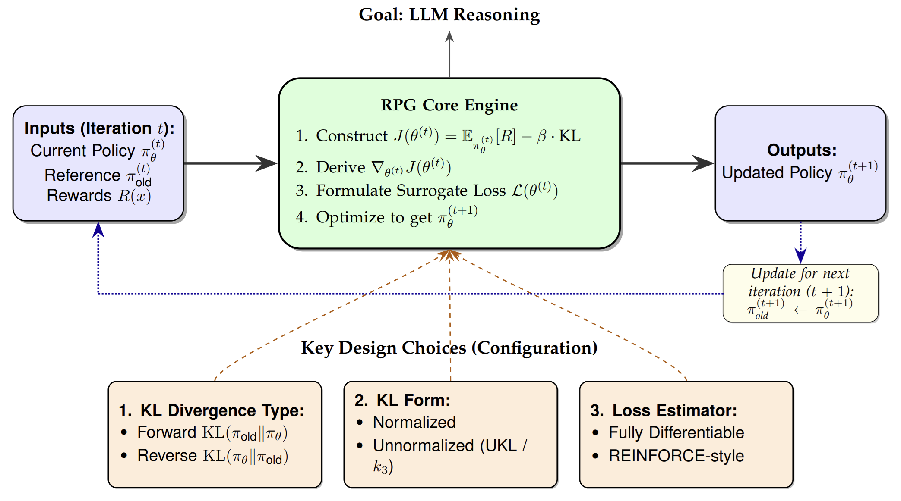
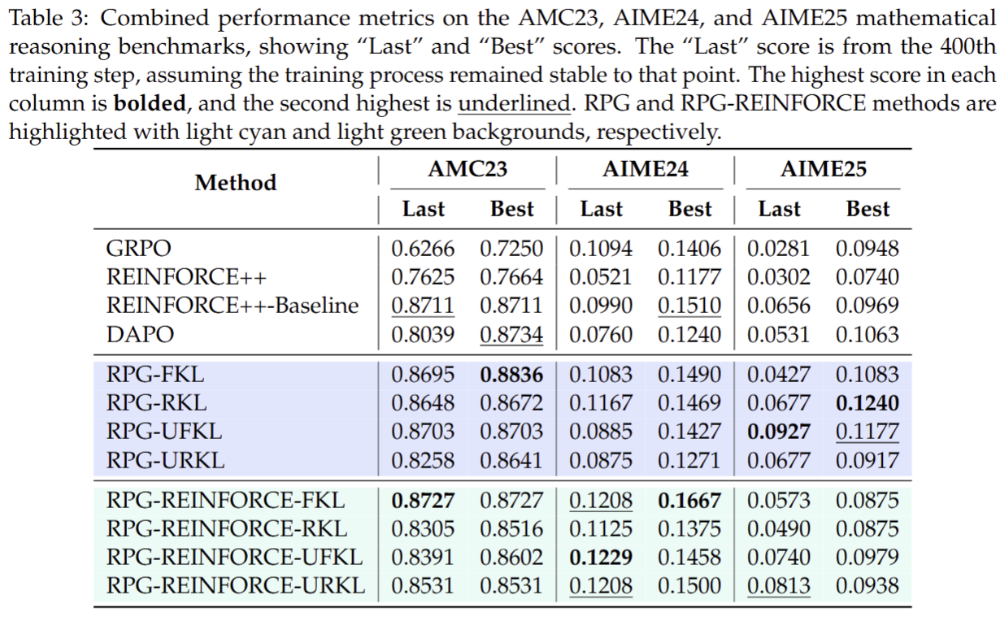
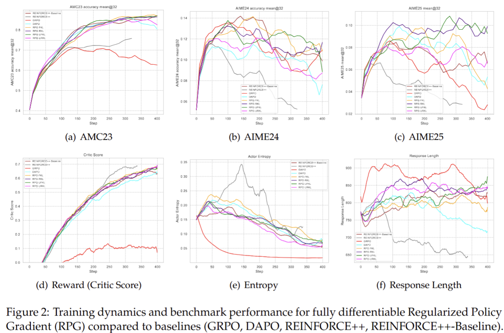
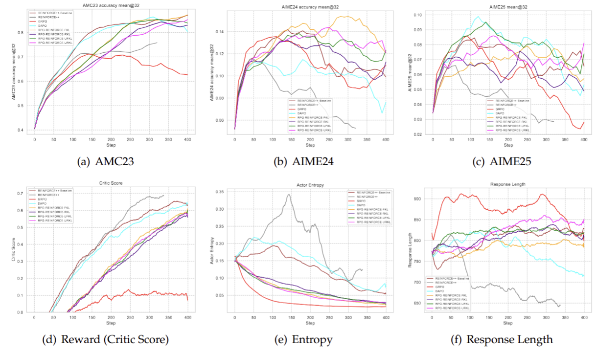
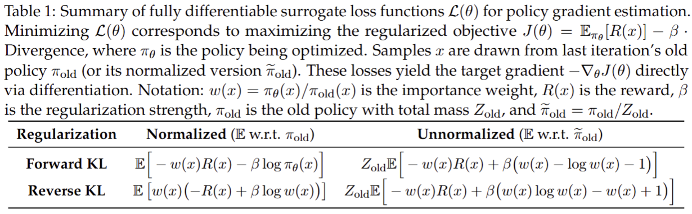
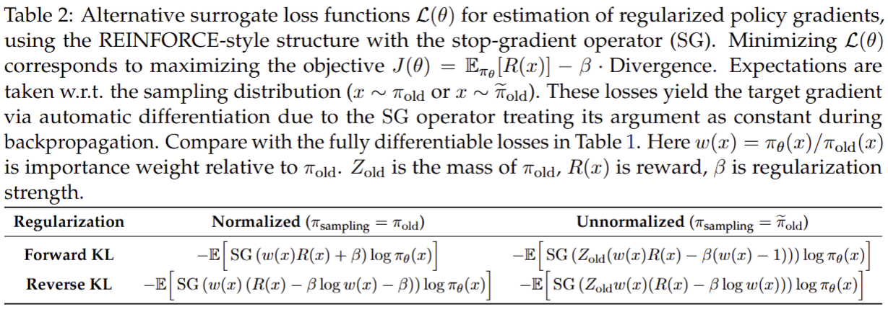

Policy gradient algorithms have been successfully applied to enhance the reasoning capabilities of large language models (LLMs). Despite the widespread use of Kullback-Leibler (KL) regularization in policy gradient algorithms to stabilize training, the systematic exploration of how different KL divergence formulations can be estimated and integrated into surrogate loss functions for online reinforcement learning (RL) presents a nuanced and systematically explorable design space. In this paper, we propose Regularized Policy Gradient (RPG), a systematic framework for deriving and analyzing KL-regularized policy gradient methods in the online RL setting. We derive policy gradients and corresponding surrogate loss functions for objectives regularized by both forward and reverse KL divergences, considering both normalized and unnormalized policy distributions. Furthermore, we present derivations for fully differentiable loss functions as well as REINFORCE-style gradient estimators, accommodating diverse algorithmic needs. We conduct extensive experiments on RL for LLM reasoning using these methods, showing improved or competitive results in terms of training stability and performance compared to strong baselines such as GRPO, REINFORCE++, and DAPO.






Please cite the paper and star this repo if you use RPG and find it interesting/useful, thanks!
@article{zhang2025design,
title={On the Design of KL-Regularized Policy Gradient Algorithms for LLM Reasoning},
author={Zhang, Yifan and Liu, Yifeng and Yuan, Huizhuo and Yuan, Yang and Gu, Quanquan and Yao, Andrew C},
journal={arXiv preprint arXiv:2505.17508},
year={2025},
}